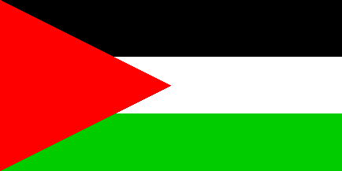

Last modified: 2001-03-09 by santiago dotor
Keywords: palestine | palestinian authority | al-falasteen | arab | plo | pna | arab league | league of arab states | sword | palm tree | eagle of saladin | unidentified flag | police |
Links: FOTW homepage |
search |
disclaimer and copyright |
write us |
mirrors
 1:2 
by Santiago Dotor
See also:
The flag specifications laid down in a decree of 1 December 1964 said that the triangle's length is half of its height. So it is 1/4th of the flag's length, and Album des Pavillons 2000 is correct. The colours are not specified in that decree. (...) The flag's ratio is 1:2. As far as I know the decree is still in force or even was confirmed in 1994. You can see the flags with such triangles in every TV report and on photographs. The triangle is nearly always the same [shape], even when the flag is shorter (2:3 or whatever).
Ralf Stelter, 23-24 January 2001
Yesterday, on a newscast on the situation in the Middle East, I saw a Palestinian flag behind Yasser Arafat, with some white and yellow drawings on the black stripe, near the red triangle. The flag was folded and the footage was short, so I only cought a glimpse of it. Could this be some kind of presidential standard, or state flag (if such a thing exists for Palestine)?
Jorge Candeias, 4 December 1997
The "Unidentified Palestinian Flag" submitted by Jorge Candeias, (04-Dec-97) is in fact our official flag and is only flown our special occasions and in the Presidential office.
Al Bitar (Palestinian Embassy at Bucharest), 13 February 1999
Could you please describe me precisely the official flag? On a colour photo I saw of president Arafat's bureau, there was a triband black over white over light blue (instead of green), with 2 crossed golden swords surrounded by palms in the white band: is that the official flag, or if not what is it? On a black and white photo of president Arafat's visit to Hebron Sept. 1997, in upper hoist corner of black band of the palestinian flag there was 2 crossed swords under Saladin's eagle: what is the use of this other flag?
Armand du Payrat, 15 February 1999
To clear up the confusion, this is a description of each of our flags:
Al Bitar (Palestinian Embassy at Bucharest), 13 February 1999
The Palestinian flag represents all Palestinian Arab aspirations regardless of party. It belongs to the Arab Revolt grouping of Arab flags and is a deliberate copy of the Jordanian flag (minus the star), which presumably represents the historical link to 1920-23 when Palestine and Transjordan were one territory. I think the flag was adopted in 1964 at the creation of the PNC and PLO, possibly a little later. It was definitely in use by 1974 when the Arab League declared the PLO the sole representative of all Palestinians and the UN granted the PLO observer status. There was no single Palestinian authority prior to 1964 that could have created a flag.
T.F. Mills, 13 December 1995
From the PASSIA (Palestinian Academic Society for the Study of International Affairs) home page:
Sharif Hussein designed the current flag as the flag of the Arab Revolt on June 1916. The Palestinian people raised it as the flag of the Arab National movement in 1917. In 1947, the Arab Ba'ath Party interpreted the flag as a symbol of the liberation and unity of the Arab nation. The Palestinian people readopted the flag at the Palestinian conference in Gaza in 1948. The flag was recognized by the Arab League as the flag of the Palestinian people. It was further endorsed by the PLO, the representative of the Palestinians, at the Palestinian conference in Jerusalem in 1964.See Origin of the Pan-Arab Colours for the full text. Quoted source: Mahdi Abdul Hadi, Evolution of the Arab Flag, Amman, February 1986.
BBC World showed yesterday some sort of parade by Palestinian policemen carrying Palestinian flags plus other flags which were greyish (not white, as compared with the white stripe in the nearby Palestinian flags), with a large displayed eagle (or hawk) in black, with two cartouches above and below of the same kind as in the Syrian coat-of-arms (see the 1972-1980 flag), the whole surrounded by a black circle. Any idea what this flag is? Maybe the Colour of the Palestinian Police?
Santiago Dotor, 22 March 2000
{kind=link}